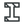
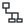
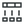
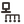
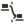
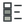

Materials
RAW Material Selector Danish
Selects one pinned Danish BR18/Table 7 material with unchanged units and metadata.
Inputs: None; family and selection dialogue in body
Outputs: Material
Selecting is not creating or validating a dataset.18 October 2026 / private working prototype
Materials → Elements → Impact → Visualisation. This describes the current private development build; it is not a public plugin download.
Materials
Selects one pinned Danish BR18/Table 7 material with unchanged units and metadata.
Inputs: None; family and selection dialogue in body
Outputs: Material
Selecting is not creating or validating a dataset.Materials
Selects one pinned German/ÖKOBAUDAT material from the current library.
Inputs: None; family and selection dialogue in body
Outputs: Material
Country/source lettering is identification, not certification.Materials
Creates a self-declared material and its explicit context.
Inputs: Name; Declared Unit; A1-A3 GWP; Density; Material family; Region; Source / boundary note; Context Type; Method ID; Method Version; Characterisation Basis; Indicator ID; Indicator Version; Indicator Definition; Method Citation
Outputs: Dataset; Name; Declared Unit; Source; Context Summary
No database write or inferred method; custom is not source-verified.Materials
Inspects original, custom or derived material metadata.
Inputs: Material
Outputs: Name; Source; Declared Quantity; Region; Lifecycle Modules; A1-A3 GWP; Density; Evidence / Type; Method Summary; Indicator Summary; Context Summary
Read-only; not the element physical inspector.Materials
Creates a user-derived material overlay with name/density evidence; source stays unchanged.
Inputs: Material; New Name; Density; Source Note; Override Existing
Outputs: Material
Does not edit source factors or scientifically verify an override.Elements
Combines geometry and material with optional dimensional data into an analytical element and known quantities.
Inputs: Linear: Curve; Material; Cross-section. Surface: Surface; Material; Thickness. Volume: Solid geometry; Material.
Outputs: Element; Geometry; Quantity; Quantity Unit; Mass; Volume
Not a Windows window; no GWP calculated here. Unit/count remains legacy-only.Elements

RAW Construct SectionConstructs geometric section data in SI from document-unit dimensions or a profile.
Inputs: Right-click shape: Rectangular, I-Section, Trapezoidal, Triangular, Polygonal, Circular; corresponding dimensions/profile and Section Name
Outputs: Section; Area; Width; Depth
No structural strength calculation; section is an input to Linear elements.Elements
Constructs measured wall elements and material-part previews. Seven modes: Solid Layer, Layered, Cavity, Framed, Rainscreen, Sandwich Panel, Curtain Wall.
Inputs: Geometry; Material/Layer Materials/Panel Material; Thickness/Layer Thicknesses/Panel Thickness; Wall Name; Wall Class; Alignment; Flip Direction; Generate Preview; mode-specific cavity/frame/support/grid data
Outputs: Wall Elements; Preview Geometry; Net Area; Volume; Summary; Warnings; Layer Meshes; Layer Colours; Layer Names; Layer Volumes
Assembly, not three generic bars; does not perform independent LCA arithmetic.Elements
Reads constructed elements and exposes available physical quantities and their provenance.
Inputs: Elements
Outputs: Geometry; Length; Area; Volume; Mass; Density; Material Name; Physical Data Summary
Read-only. No density editing, no invented average density for layered elements, no GWP.Impact
Calculates GWP for the selected scope using quantities, material factors and eligible enrichment.
Inputs: Elements
Outputs: Result; Element GWP; Element Mass; Element Volume; GWP Unit; Module Scope
GWP identity is constant in all eight modes. Missing modules/context are not repaired by an icon.Impact
Constructs and evaluates one stable fabrication event from entered parameters and one authoritative energy route.
Inputs: Process Name; Power (kW); Material Processed (kg); Output Rate (kg/h); Processing Time (h); Measured Energy (kWh); Electricity Emissions Factor; Factor Source / Location; Source Note; specialist inputs by mode
Outputs: Process; Processing Time (h); Energy (kWh); Process GWP (kg CO2-eq); Energy Intensity (kWh/kg); Impact Data; Status
Energy/electricity GWP only; not a machine simulator. Constructing data and identifying a machine mode are related but different.Impact

RAW Assign Process ImpactAllocates evaluated events into element ledgers with duplicate, overlap, boundary and context checks.
Inputs: Elements; Process; Lifecycle Module; EPD Coverage; Allocation Method; Allocation Values / Shares; Evidence / Source Note
Outputs: Elements
Assignment is not automatic approval; uncertain contributions remain pending.Impact

RAW Process Impact BreakdownReads and separates material/process contributions from an existing result.
Inputs: RAW Impact Result
Outputs: Material GWP; Process GWP; Eligible Combined GWP; Pending / Excluded Contributions; Module Scope; Status / Diagnostics
No independent recalculation; unavailable values remain unavailable.Impact

RAW End-of-Life ScenarioAssigns evidenced C1–C4 factors to elements, protecting source values by default.
Inputs: Elements; C1 Factor; C2 Factor; C3 Factor; C4 Factor; C Factor Unit / Basis; Waste Route; Source Note; Override Existing
Outputs: Elements
Waste route is descriptive evidence, not a simulated routing network. Complete C requires all four modules; partial remains flagged.Impact

RAW Reuse / Recovery ScenarioAssigns an evidenced net D factor with provenance and rate metadata beyond the current system boundary.
Inputs: Elements; D Factor; D Factor Unit / Basis; Reuse Rate; Recycling Rate; Recovery Rate; Credit Method; Source Note; Override Existing
Outputs: Elements
Rates do not calculate credits. D can be positive or negative; no automatic benefit or guaranteed reuse.Visualisation
Maps existing GWP values to geometry colours, with explicit supported normalisation and unavailable handling.
Inputs: Result; Geometry; Values; Low Bound; High Bound; Colour Mode; Reverse Gradient
Outputs: Preview Geometry; Preview Colours; Legend Values; Legend Labels; Colour Mode; Warnings
Visualisation only; no environmental recalculation.Visualisation

RAW GWP LegendCreates reference swatches, labels and placement points from preview output.
Inputs: Legend Values; Legend Labels; Preview Colours; Base Point; Width; Height; Title; Unit
Outputs: Legend Geometry; Legend Text; Legend Points; Legend Colours
No LCA calculation or baking.